Descubra
Nossa História
O Buona Pasta Amutti é mais do que um restaurante; é uma viagem à Itália. Fundado por Gabriel Amutti, um chef apaixonado, o restaurante é uma homenagem à sua avó, Barbara de Falco Amutti, que o ensinou os segredos da cozinha italiana desde sua infância em Florence, na Toscana. Barbara de Falco, com suas receitas simples e autênticas, inspirou Gabriel, especialmente com seu famoso ravioli de ricota e espinafre, que se tornou uma lenda local. Gabriel decidiu abrir o Buona Pasta Amutti para compartilhar a culinária de sua avó com o mundo. O restaurante reflete a tradição e os sabores de uma autêntica trattoria italiana, com ingredientes frescos e uma atmosfera acolhedora. O nome "Amutti" homenageia sua avó e a promessa de preservar as receitas familiares. Hoje, o Buona Pasta Amutti é conhecido pela sua comida de qualidade, onde os clientes não só experimentam pratos deliciosos, mas também se conectam com a história de uma família e sua paixão pela culinária italiana.
 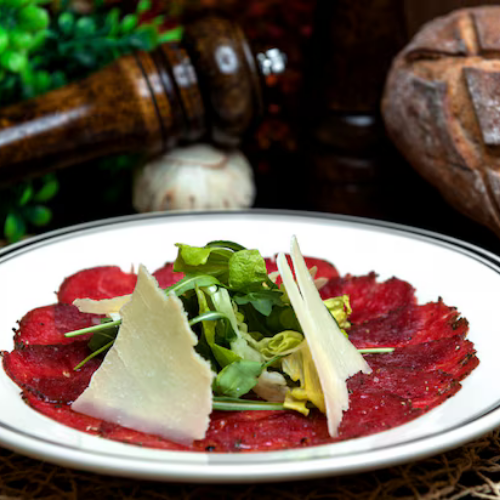
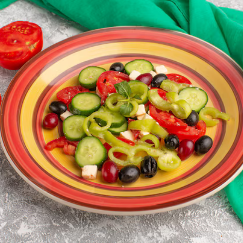
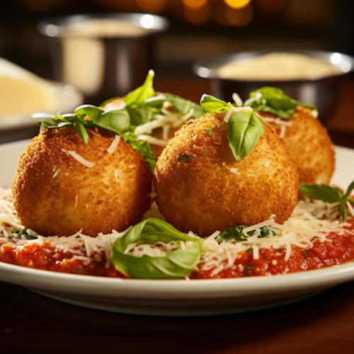
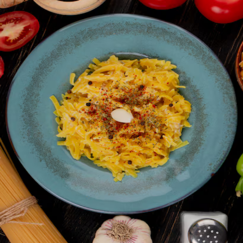
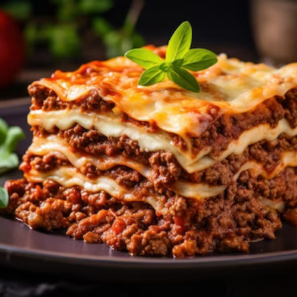
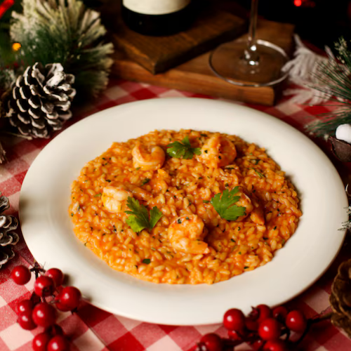
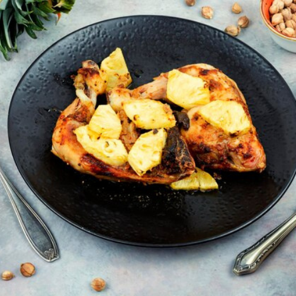
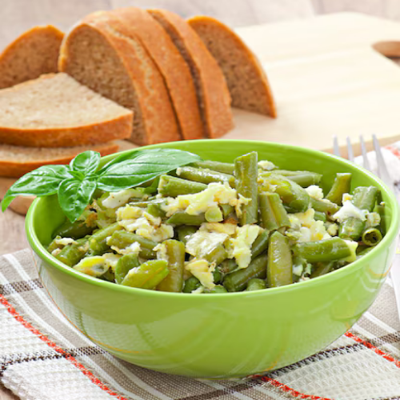
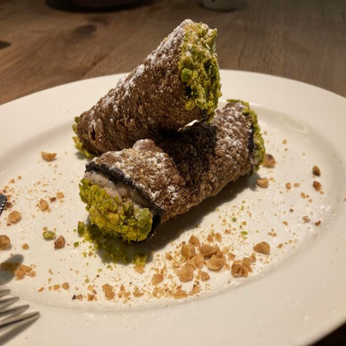
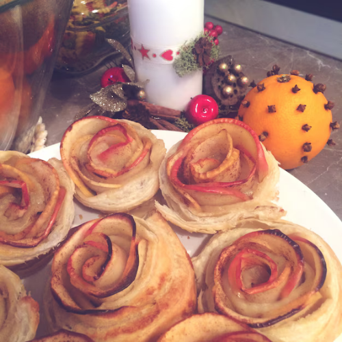
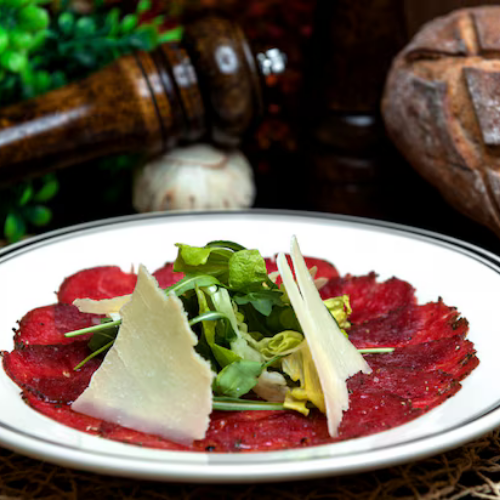
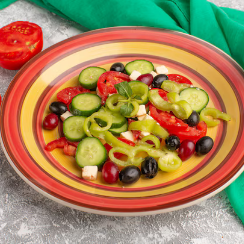
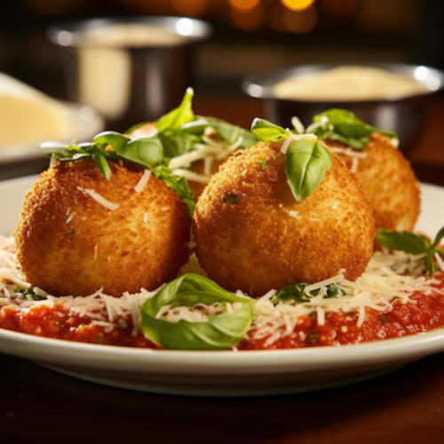
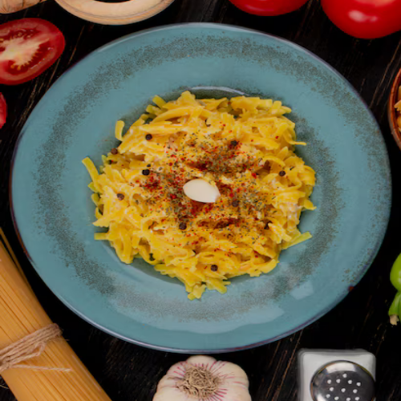
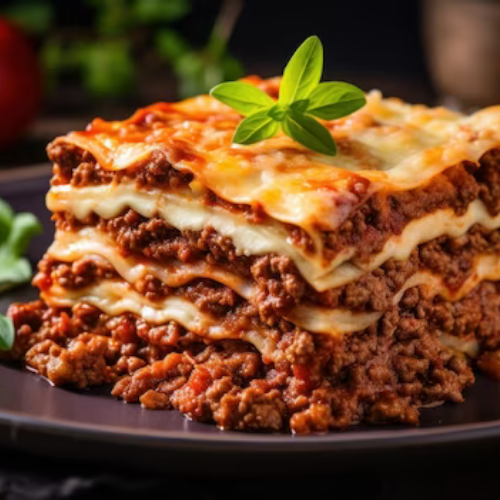
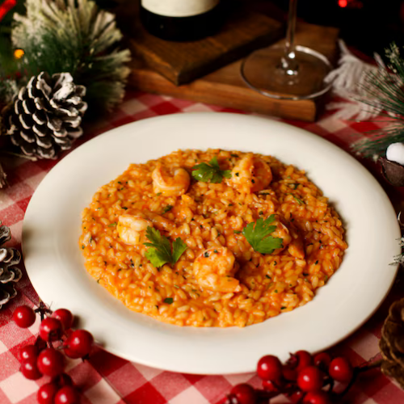
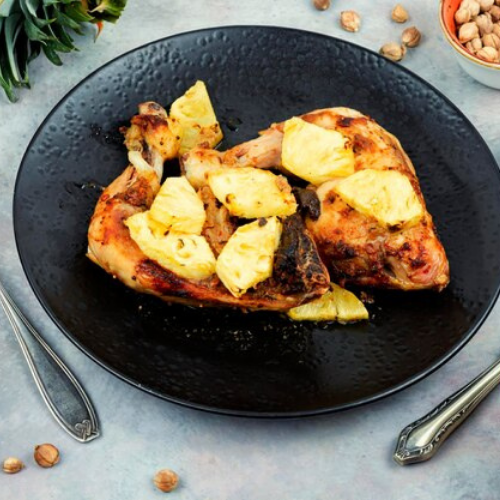
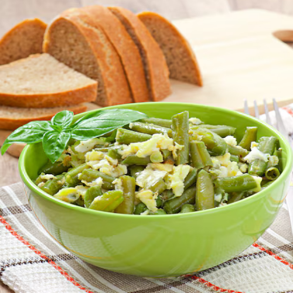
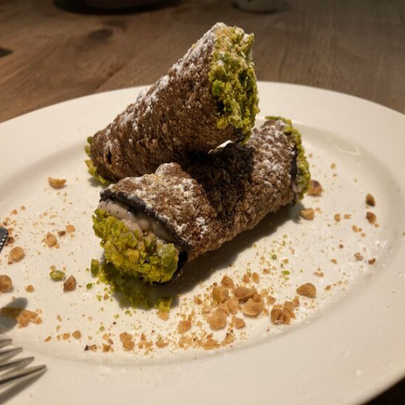
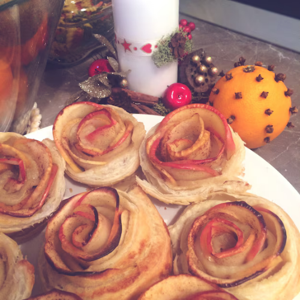